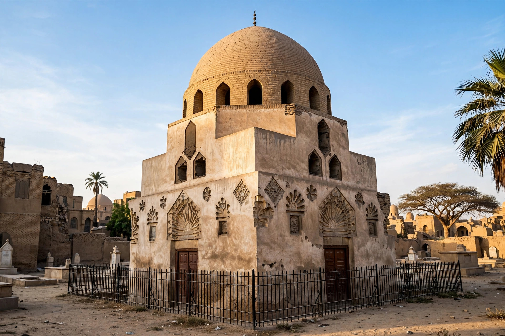

Shajar al-Durr
| Shajar al-Durr | |
|---|---|
| Sultana of Egypt | 2 May 1250 – July 1250 |
| Died | 28 April 1257, Cairo |
| Consort | As-Salih Ayyub; Izz al-Din Aybak |
| Dynasty | Ayyubid by marriage; Bahri Mamluk era |

Shajar al-Durr (Arabic: شجر الدر, "Tree of Pearls"; died 28 April 1257) was the widow of the Ayyubid sultan as-Salih Ayyub and a central figure in the Seventh Crusade's Egyptian campaign. After concealing her husband's death and helping direct the defence that captured King Louis IX of France, she was proclaimed Sultana of Egypt in 1250 — the first woman to rule Egypt in her own name in the Islamic era — before the political settlement that transferred power to the Mamluks, whose sultanate she helped bring into being.
Rise
Shajar al-Durr was of Turkic or Armenian origin and had been a slave concubine (umm walad) of as-Salih Ayyub, by whom she had a son, Khalil, who died in infancy. She accompanied the sultan on campaign and enjoyed his complete confidence. When as-Salih died in November 1249 at al-Mansurah, with a Crusader army advancing down the Nile, Shajar al-Durr concealed his death, issuing orders in his name and working with the commander Fakhr al-Din and the chief eunuch Jamal al-Din Muhsin to keep the army together until the heir, al-Muazzam Turanshah, could arrive from Mesopotamia.
The Seventh Crusade and Turanshah
The Egyptians destroyed the Crusader army at the Battle of al-Mansurah and captured Louis IX at Fariskur in April 1250. Turanshah, however, alienated both his father's Mamluk guards and Shajar al-Durr, whom he threatened. On 2 May 1250 the Bahri Mamluks murdered Turanshah, and the emirs proclaimed Shajar al-Durr sultana. Coins were struck in her name and the Friday sermon (khutba) was read for her as "Queen of the Muslims".
Marriage to Aybak and fall
The Abbasid caliph in Baghdad refused to recognise a female ruler, and Egyptian opinion was uneasy. After about eighty days Shajar al-Durr married the Mamluk commander Izz al-Din Aybak and abdicated in his favour, though she remained the power behind the throne. In 1257, after Aybak took — or sought — a second marriage alliance with the ruler of Mosul, Shajar al-Durr had him murdered in his bath. The dead sultan's partisans, led by his son al-Mansur Ali and the Mamluk Qutuz, seized her; she was beaten to death by slave women of Aybak's household, and her body was thrown from the citadel. She was later buried in the mausoleum she had built near the Mosque of Ibn Tulun in Cairo, famous for its pioneering use of carved stucco and a prayer niche inlaid with a shimmering "tree of pearls" motif in glass mosaic.
See also
Mamluk Sultanate · Seventh Crusade · Louis IX of France · Qutuz · Battle of Ain Jalut